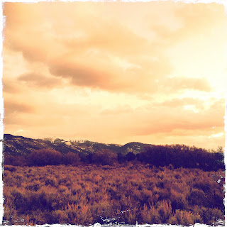

Recovered weblog entry
Any Day Now, It'll All Be White

Don't mean to sound like a broken record, but can't say enough about this year's extended autumnal warmth.
Lens: Lucas AB2
Film: Kodot XGrizzled

Recovered weblog entry

Don't mean to sound like a broken record, but can't say enough about this year's extended autumnal warmth.
Lens: Lucas AB2
Film: Kodot XGrizzled